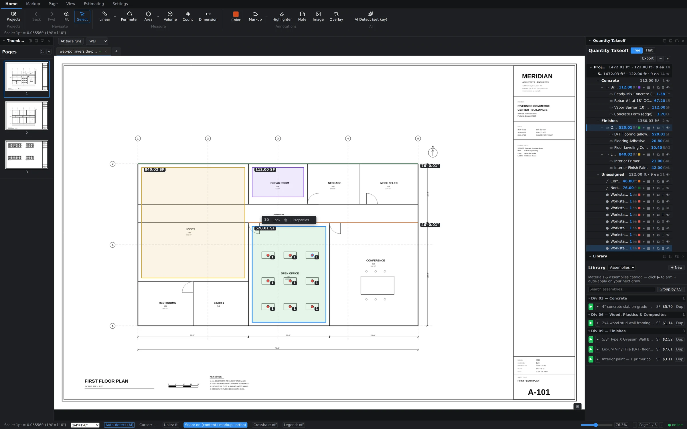
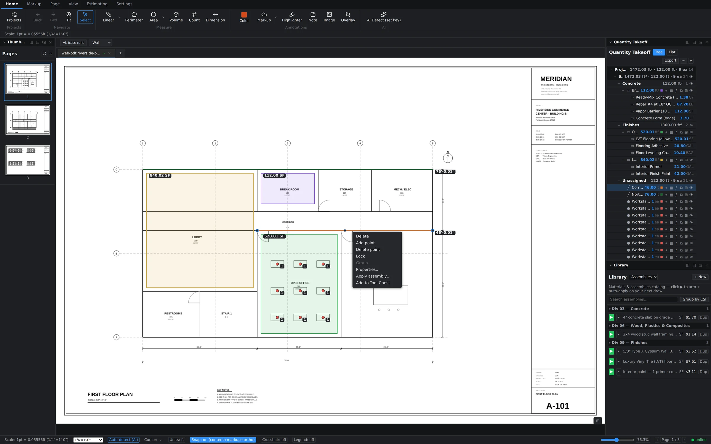

Selecting: click or marquee
Switch to the Select tool on the Home tab. Click any measurement to select it — it outlines in blue and grows handles, and its row highlights in the Quantity Takeoff tree so you always know which number on the sheet is which number in the totals. To grab several at once, drag a marquee over a region: everything inside joins the selection.
The floating selection toolbar
The moment you have a selection, a compact toolbar appears anchored right at it — no trip back to the ribbon. It shows a count badge (how many items you've got), plus Lock, Delete, and Properties… actions that apply to the whole selection at once.

- Lock protects finished work — locked items can't be nudged out of place while you work around them.
- Delete removes the whole selection in one step. Delete on the keyboard does the same.
- Properties… opens the shared properties of everything selected, so you can restyle a batch in one pass.
Moving and reshaping
With an item selected, drag its body to move it, or drag an individual vertex handle to reshape it — extend a wall run, tighten an area boundary, straighten a sloppy corner. Quantities recompute live as the geometry changes; the tree never goes stale.
For deeper surgery, right-click a selected measurement. The context menu carries the full editing kit: Delete, Add point, Delete point, Lock, Group, Properties…, Apply assembly…, and Add to Tool Chest.

One action, one undo
Undo in Groundwork Takeoff groups by what you meant to do, not by internal steps. Finish a five-vertex run, then hit Ctrl+Z — the whole run disappears, not one vertex. Delete ten items with the floating toolbar, undo once, all ten are back. Move, reshape, paste, batch restyle: each is a single clean step. You'll never mash undo eight times to unwind one mistake.
Copy and paste
Selections ride the clipboard whole:
- Ctrl+C copies the entire selection.
- Ctrl+V pastes it with a small offset — paste repeatedly and each copy steps further, so stacked pastes stay visible and grabbable.
- Shift+V pastes in place, exactly on top of the original — perfect for duplicating work you're about to restyle.
- Pasting onto a different page lands the items at the same sheet position and re-resolves them against that page's own scale, so quantities stay honest even across pages calibrated differently.